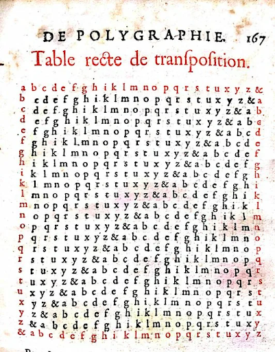

Историческая справка:
Иоганн Тритемий, аббат монастыря Шпонхейм, живший в Германии в XV веке, в своей книге «Полиграфия» описал новаторский способ шифрования, построенный на основании периодически сдвигаемого ключа и названный впоследствии «Таблица Тритемия».
Его суть состоит в том, что замену для каждой буквы из алфавита берут из специальной таблицы, построенной следующим образом: каждая следующая строка берется со смещением на одну букву. Первая буква текста шифруется по первой строке, вторая – по второй и так далее, пока длина текста не превысит длину алфавита и шифрование снова не будет проводиться с первой строки.
Преимущество данного метода перед шифром Альберти, заключается в том, что для каждой буквы задействован новый алфавит, когда как Альберти менял алфавиты только после трех-четырёх слов. Поэтому шифртекст состоял из отрезков, каждый из которых обладал закономерностями открытого текста, которые помогали вскрыть криптограмму.<
Данный шифр – первый нетривиальный пример периодического шифра. Так называется многоалфавитный шифр, правило зашифрования которого состоит в использовании периодически повторяющейся последовательности простых замен.
